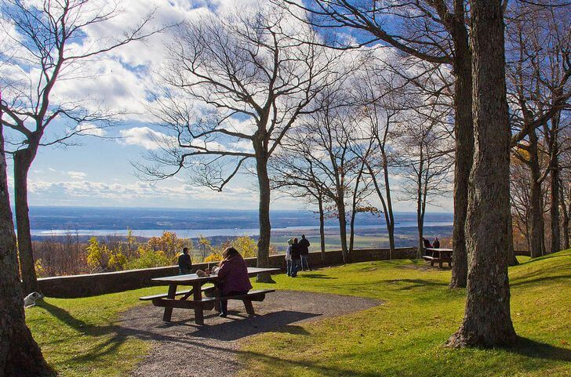
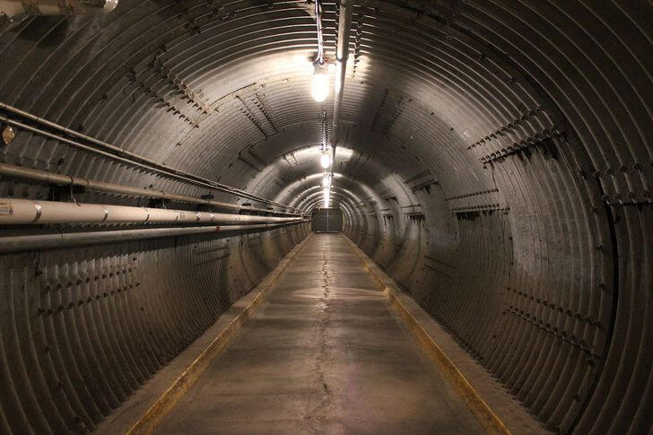

Это федеративная конституционная монархия с парламентской системой правления, её монархом является монарх Британского Содружества наций; Канада — двуязычная и многокультурная страна, где английский и французский языки признаны официальными на федеральном уровне. Технологически и промышленно развитое государство, Канада имеет многоотраслевую экономику, базирующуюся на богатых природных ресурсах и торговле (в частности с США, с которыми Канада комплексно сотрудничает со времён существования колоний и основания Конфедерации).
Коренные канадцы представляли собой множество разрозненных племен со своими языками, культурными особенностями и верованиями. Они занимались охотой и рыбной ловлей, кочевали по территории Канады и США, редко основывали постоянные поселения. Многие племена инуитов впервые стали контактировать с европейцами только в конце 19 века.
Об истории Канады в этот период мало что известно: письменных источников нет, а археологических данных немного. Колонизацию Канады начали французы. Итальянский исследователь Джованни Верраццано, будучи на французской службе, исследовал берега Северной Америки от Ньюфаундленда. Вскоре после обретения независимости Канада выкупила огромные территории на северо-западе материка от Великих озер до Скалистых гор, которые ранее принадлежали торговой компании Гудзонова залива. Их населяли метисы – потомки французских торговцев мехами из компании и коренных жителей-индейцев.Подавление восстаний метисов значительно сказались на развитии Канады. По времени они совпали со строительством трансконтинентальной железной дороги, что тоже способствовало процветанию страны. Потом была великая депрессия, после которой Канада снова стала стремительно развиваться, и является тепрь тем, что есть сейчас.
Канада находится на севере американского континента и имеет общую площадь 9976 тыс. кв. км. (вторая по площади страна мира). Омывается водами Северного Ледовитого, Атлантического и Тихого океанов, в результате чего имеет самое большое побережье в мире. На юге граничит с США, а на севере, благодаря своим полярным островам, углубляется на 800 км. за Полярный Круг. Канаде принадлежит ряд островов - Баффинова Земля, Виктория, Элсмир, Девон, Банкс, Ньюфаундленд и др. Высшая точка - г. Логан на северо-западе (5951 м.). Скалистое тихоокеанское побережье страны изрезанно фьордами и отгорожено от основной территории мощной горной грядой гор Св. Ильи, хребтов Берегового и Баундари. Знаменитая канадская прерия тянется по всему югу страны до самого атлантического побережья. Атлантические районы страны заняты невысокими холмистыми грядами, перемежающимися с обширными равнинами. Полярная зона и район Гудзонова эалива (залив Хадсон) представляют собой огромные низменные равнины, пересеченные тысячами рек и озер, часто заболоченные или занятые тундровыми ландшафтами.
Положение Канады на севере Американского континента определяет основные черты климата это страны. Смена времен года в разных частях Канады происходит по разному, но с уверенностью можно сказать что зима здесь долгая и холодная и длится с ноября по март, а весна и осень – теплые. Британская Колумбия – это регион с умеренным климатом: средняя температура в январе достигает +5 °С. Июль и август относительно теплые и солнечные во всех частях Канады, даже на Крайнем Севере, так что большинство фестивалей на открытом воздухе проводятся летом. Но зимой тоже происходит не мало интересных событий – и в помещении, и на открытом воздухе, что связано с умением канадцев радоваться даже в самую стужу, например, катание на санях, запряженных собаками, и катание на коньках.
Нельзя назвать какое-либо блюдо в Канаде национальным. Канада — многорегиональная и многонациональная страна, где кухня варьируется в зависимости от региона. Бывший премьер-министр Канады Джо Кларк так высказывался об этом: « В Канаде много кухонь. Это не солянка, а шведский стол». К повседневным блюдам канадцев относятся блюда из натурального мяса типа бифштекса, ростбифа, лангета. Довольно «успешное» блюдо канадской кухни — филе-брошетт (насажанные на шампур и обжаренные на вертеле кусочки филейной вырезки, бекона, шампиньонов и лука). К первым блюдам канадской кухни относятся пюреобразные супы из овощей, цветной капусты, тыквы, томатов и бульоны с гренками, лапшой, зеленью. Наиболее популярные в Канаде блюда — суп из тыквы и кленовый сироп.
История музея началась в 1880 году с небольшой коллекции военных артефактов, официальный статус он получил только в 1942 году. С 1967 года собрание располагалось в помещениях бывшего Государственного архива, с 2005 года – в новом здании, специально построенном к 60-летнему юбилею окончания Второй мировой войны. Экспозиция рассказывает о военной истории Канады, а также о мировых войнах XX столетия.

Музей естественной истории, который открылся в 1990 году. Здесь хранится выдающаяся коллекция минералов, насчитывающая несколько тысяч образцов, а также внушительное собрание драгоценных камней. В музее выставляются древние окаменелости ископаемых животных и растений. Особого внимания заслуживает гербарий с огромным количеством растений (более 500 тысяч).
Парк расположен на огромной территории в 360 км². Здесь проложены сотни километров велосипедных маршрутов и десятки пешеходных троп. Из развлечений туристам доступны рыбалка в местных озерах, гребля на каноэ, плавание, езда верхом и другие активные занятия. На территории парка есть мраморная пещера, пляжи, гора, а также поместье Макензи Кинга с живописными садами и уютными шале.

Ядерные убежища, которые были созданы во время Холодной войны в 1960-е годы по указанию правительства страны. Всего было построено около 50 укрытий. Главный резервный бункер расположен в 30 км от Оттавы на территории военной базы. Это четырехэтажное убежище сегодня превращено в музей, и посетители могут увидеть живые свидетельства той истерии, которая творилась в стране из-за угрозы ядерного удара.

Исследовательский центр и экспериментальная ферма практически в самом центре Оттавы. Здесь есть ботанический сад с 1700 видами растений, сад дикой природы Флетчера, небольшой зоопарк с домашними животными, музей сельского хозяйства, фермерский рынок и множество других интересных объектов. Доминион возник в 1889 году. На сегодняшний день он занимает обширную территорию в 26 га.
Оригинальный особняк был построен в начале XX столетия для состоятельного бизнесмена сэра Г.М. Пеллата. Через какое-то время он продал замок из-за невозможности содержать недвижимость и уплачивать налоги. До 30-х гг. сооружение использовалось под отель, а потом отошло государству.
Музей, призванный демонстрировать и популяризировать научные достижения человечества. Он был основан в 1969 году. На территории музея можно своими глазами увидеть новейшие разработки в области физики, астрономии, медицины, биологии и других отраслей.
Городской парк, место отдыха с прекрасной инфраструктурой для посетителей. На территории есть свой зоопарк, детские площадки, пешеходные дорожки, цветущие сады, разнообразные культурные объекты. Парк расположился в живописной холмистой местности, испещренной лощинами и небольшими озерами.
В Королевском музее хранится более 6 млн. экспонатов: кости динозавров, предметы искусства, оружие, одежда, предметы быта и многое другое.
Ниагарский водопад появился несколько тысяч лет назад, когда образовавшиеся в результате таяния отступающего ледника потоки воды промывали себе русло в мягких песчаниках. Река Ниагара прорезала в них глубокое ущелье до тех пор, пока не обнажились более твердые скальные породы.

Это музей современной науки, находящийся в здании в форме шара с фигурой динозавра на вершине. Можно поставить множество нестандартных экспериментов: обогнать свою тень, запустить квадратные мыльные пузыри или оказаться внутри крупноформатного фотоаппарата.
Ключевая особенность пляжа – расположенный тут наиболее длинный в стране бассейн с морской подогреваемой водой (открыт только летом). В пешей доступности имеются спортплощадки, пешеходные дорожки и небольшие кафе.
Помимо осмотра рисованных карт, реальных судов, фотографий, художественных работ, книг и артефактов, можно стать участником образовательной лекции или посетить огромную местную библиотеку, доступную каждому желающему. Все экспонаты посвящаются морской истории Ванкувера и Канады.
Главная специализация данной достопримечательности Ванкувера – знакомство гостей с различными декоративными растениями. Коллекция зеленых насаждений действительно богатая, в том числе редчайшими экземплярами. Кроме того, в сотрудничестве с Ассоциацией ботанических садов, сад Ван Дусена проводит общеобразовательные программы.
Одна из особенностей этого знаменитого парка заключается в том, что он является результатом многолетней эволюции городского и лесного пространства. Возраст многих деревьев достигает двух сотен лет. Здесь есть собственный океанариум, площадки для игр, озера и пляжи. Для удобства пеших прогулок имеются тропинки, дорожки и красивая набережная.
Уникальный жилой комплекс, возведенный в городе в середине 20 века. На деле, он представляет собой дом, состоящий из соединенных между собой в различном порядке кубов-квартир. Архитектурное исполнения здания таково, что каждые апартаменты имеют собственный сад на крыше другой квартиры.
Комплекс, в составе которого зверинец, этнопарк с 5 разными экосистемами, научно-исследовательский центр. На огромной территории успешно имитируются условия различных мест нашей планеты. Попав в зону океана, можно понаблюдать за рыбами в гигантском аквариуме и за чайками, гнездящимися на скалах. Среди жильцов сибирской тайги – бобры, выдры и рыси.
Уникальный парк развлечений, открытый в середине 20 века. В настоящее время владельцами Ла-Ронда являются американцы, поэтому многие аттракционы и забавы тут соответствующие: железные дороги, Чу Чу трейн, карусели.

Оригинальный музей на острове Елены начал работу в 1990 году, и продолжает рассказывать о ресурсах реки святого Лаврентия. Шарообразная постройка с многочисленными инженерными конструкциями имеет вид огромного мыльного пузыря из кружева металла.
На территории растут деревья, кустарники и цветы из различных уголков Канады и всего мира. Комплекс поделен на отдельные участки с собственной тематикой в зависимости от флоры. Тут есть вершины Альп, Япония, КНР и т.д.
О стране: https://ru.wikipedia.org/wiki/Канада
История: https://lingua-airlines.ru/articles/kratkaya-istoriya-kanady/
Герб: https://clck.ru/THReb
Флаг: https://clck.ru/MhJXE
Нац.животное: https://clck.ru/akULR
Краткое содержание: https://clck.ru/akULY
Климат: https://mircanada.ru/klimat-kanady/
География: https://guide.travel.ru/canada/geo/
Еда: https://ru.wikipedia.org/wiki/Канадская_кухня
Достопримечательности Оттавы: https://top10.travel/dostoprimechatelnosti-ottavy/
Достоприм. Монреаля: https://www.tripzaza.com/ru/destinations/dostoprimechatelnosti-monrealya
Достоприм. Торонто: https://top10.travel/dostoprimechatelnosti-toronto/
Достоприм. Ванкувера: https://www.tripzaza.com/ru/destinations/dostoprimechatelnosti-vankuvera
Ниагара: https://clck.ru/akUD3
Фотографии: https://w-club.com.ua/blog/43-kosmicheskie-landshafty-belye-medvedi-kanady
http://tatkanadei.ru/?page_id=10
https://pic2.me/download/origin/223930.html
Cократитель ссылок: https://clck.ru/